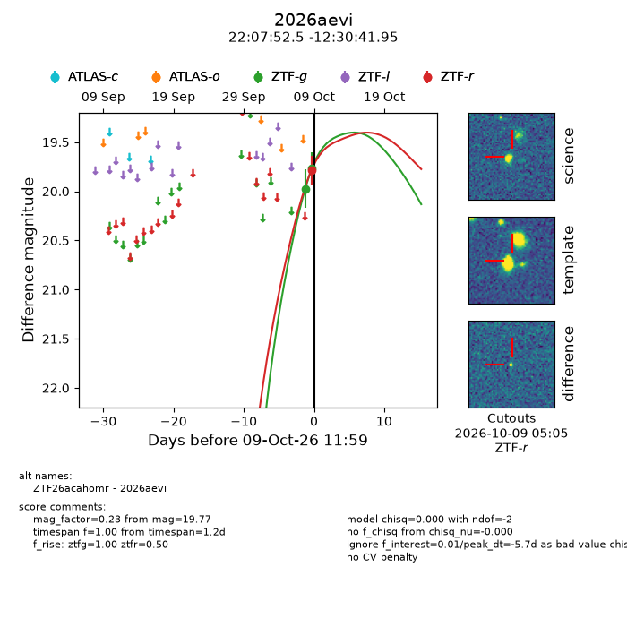
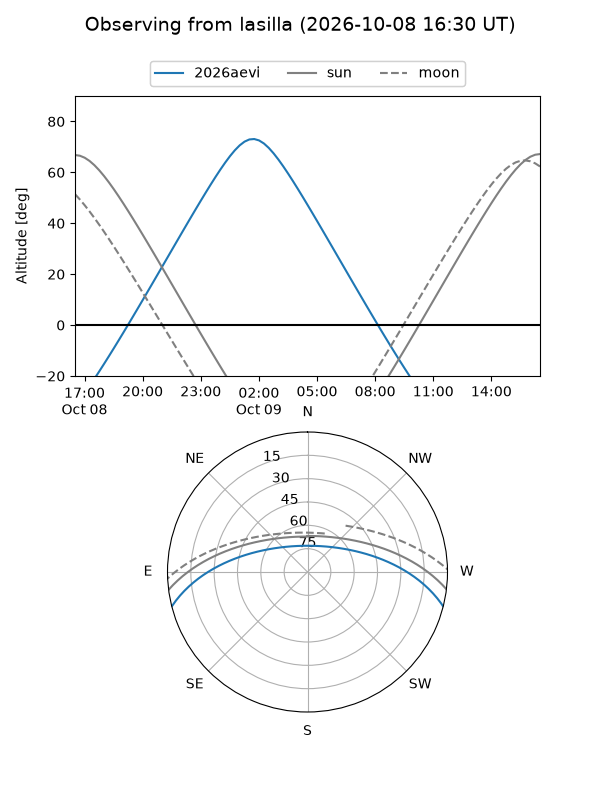
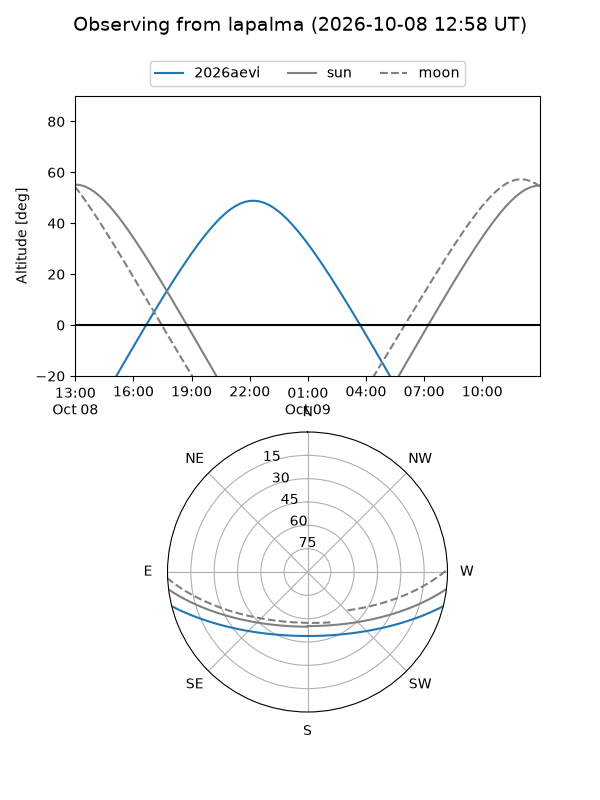
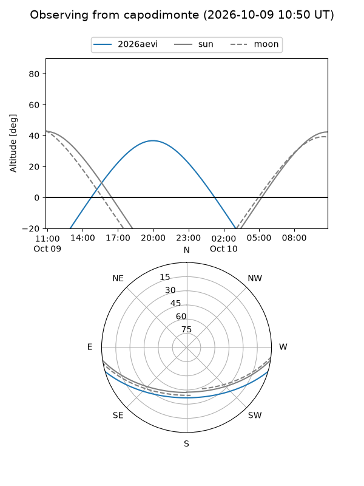
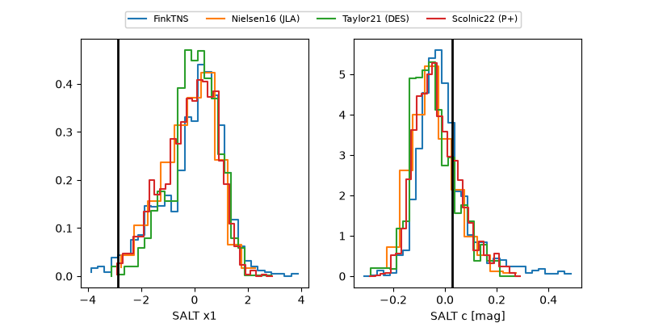

2026aevi
Target 2026aevi at 2026-10-09 12:01
Aliases and brokers:
FINK-ZTF: ztf.fink-portal.org/ZTF26acahomr
Lasair-ZTF: lasair-ztf.lsst.ac.uk/objects/ZTF26acahomr
ALeRCE-ZTF: alerce.online/object/ZTF26acahomr
YSE-PZ: ziggy.ucolick.org/yse/transient_detail/2026aevi
TNS name: wis-tns.org/object/2026aevi
Direct TNS query: direct search
alt names
ZTF26acahomr (ztf,fink_ztf)
2026aevi (tns,yse)
Coordinates:
equatorial (ra, dec) = 331.9688,-12.51165
equatorial (HMS+DMS) = 22:07:52.52,-12:30:41.95
galactic (l, b) = (45.6057,-49.07797)
Flags:
TNS type: nan
peak dt: -5.7
Photometry:
last ztfg=19.77, ztfr=19.79
2 ztfg, 1 ztfr detections
Lightcurve

Visibility



Additional plots
